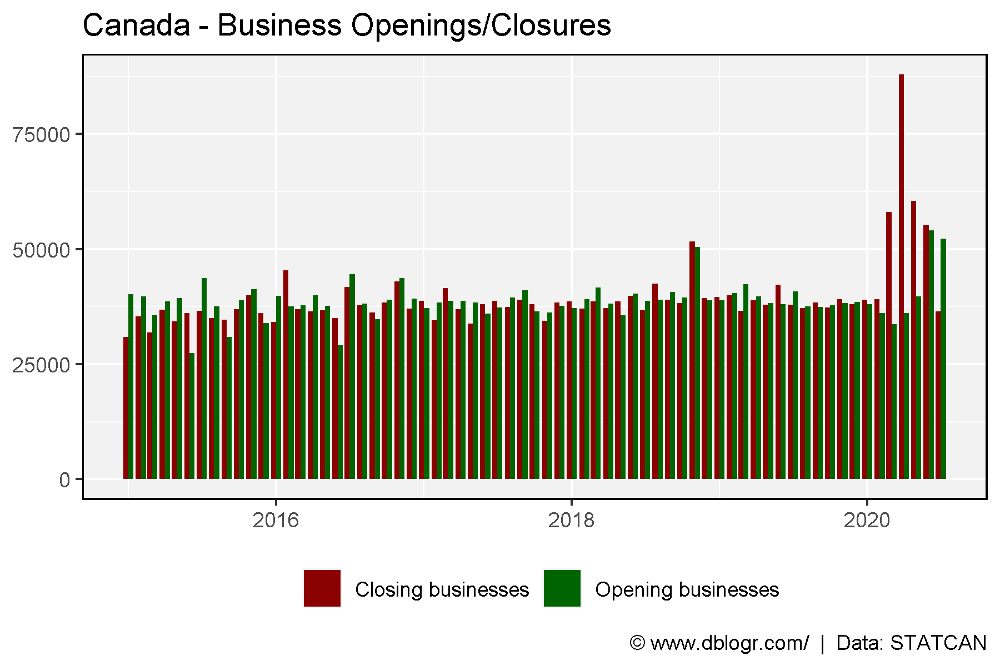
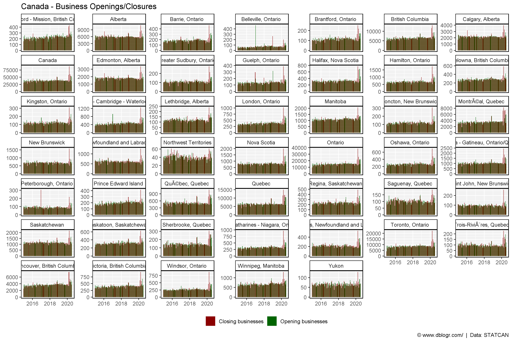
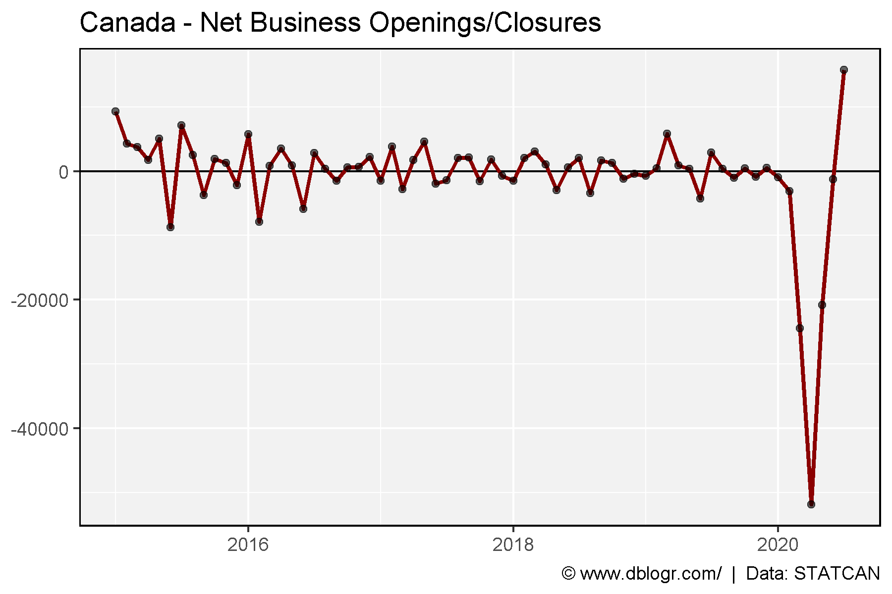
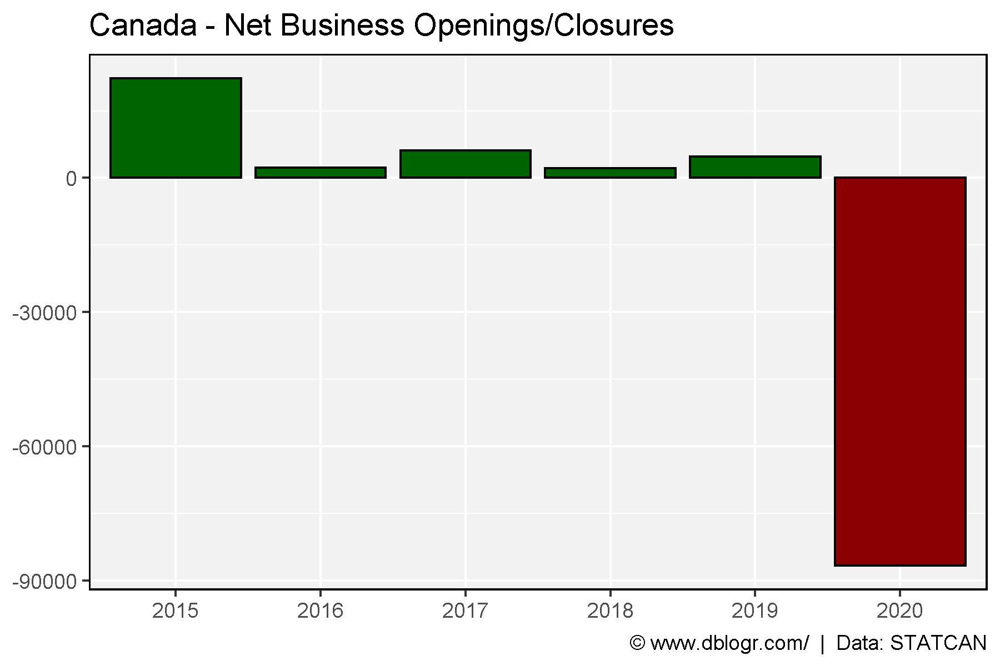
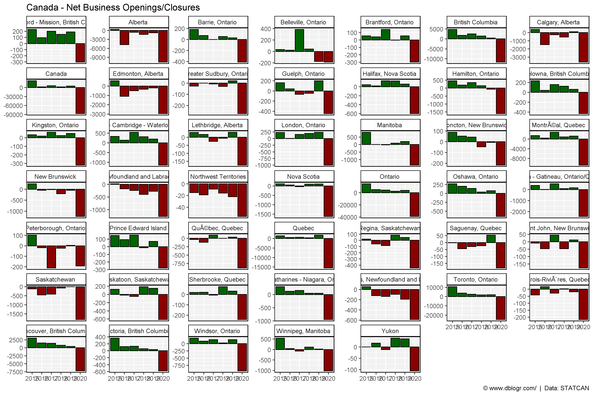

STATCAN data Tables: 3310027001
https://www150.statcan.gc.ca/n1/pub/11-626-x/11-626-x2020014-eng.htm
# devtools::install_github("derekmichaelwright/agData")
library(agData) # Loads: tidyverse, ggpubr, ggbeeswarm, ggrepel# Prep data
dd <- read.csv("3310027001_databaseLoadingData.csv") %>%
rename(Measurement=Business.dynamics.measure) %>%
filter(Measurement %in% c("Opening businesses","Closing businesses"),
!is.na(VALUE)) %>%
mutate(Date = as.Date(paste0(ï..REF_DATE,"-01"), format = "%Y-%m-%d")) %>%
select(Area=GEO, Date, Measurement, VALUE) %>%
spread(Measurement, VALUE) %>%
mutate(Difference = `Opening businesses` - `Closing businesses`,
Area = gsub("Â", "", Area))
xx <- dd %>%
select(Area, Date, `Opening businesses`, `Closing businesses`) %>%
gather(Measurement, Value, `Opening businesses`, `Closing businesses`)# Prep data
xc <- xx %>% filter(Area == "Canada")
# Plot
mp <- ggplot(xc, aes(x = Date, y = Value, fill = Measurement)) +
geom_bar(stat = "identity", position = "dodge") +
scale_fill_manual(name = NULL, values = c("darkred", "darkgreen")) +
theme_agData(legend.position = "bottom") +
labs(title = "Canada - Business Openings/Closures", y = NULL, x = NULL,
caption = "\xa9 www.dblogr.com/ | Data: STATCAN")
ggsave("Unemployment_Canada_01.png", mp, width = 6, height = 4)
# Plot
mp <- ggplot(xx, aes(x = Date, y = Value, fill = Measurement)) +
geom_bar(stat = "identity", position = "dodge") +
facet_wrap(Area ~ ., scales = "free_y") +
scale_fill_manual(name = NULL, values = c("darkred", "darkgreen")) +
theme_agData(legend.position = "bottom") +
labs(title = "Canada - Business Openings/Closures", y = NULL, x = NULL,
caption = "\xa9 www.dblogr.com/ | Data: STATCAN")
ggsave("Unemployment_Canada_02.png", mp, width = 12, height = 8)
# Prep data
xc <- dd %>% filter(Area == "Canada") %>%
mutate(Date = as.POSIXct(Date))
# Plot
mp <- ggplot(xc, aes(x = Date, y = Difference)) +
geom_hline(yintercept = 0) +
geom_line(size = 1, color = "darkred") +
geom_point(alpha = 0.6) +
theme_agData(legend.position = "bottom") +
labs(title = "Canada - Net Business Openings/Closures", y = NULL, x = NULL,
caption = "\xa9 www.dblogr.com/ | Data: STATCAN")
ggsave("Unemployment_Canada_03.png", mp, width = 6, height = 4)
sum(dd %>% filter(Area == "Canada", Date > "2020-01-01") %>% pull(Difference))## [1] -85725# Prep data
xx <- dd %>%
separate(Date, c("Year","Month","Day")) %>%
group_by(Area, Year) %>%
summarise(Businesses = sum(Difference)) %>%
ungroup() %>%
mutate(Pos = ifelse(Businesses > 0, "Yes", "No"))
xc <- xx %>% filter(Area == "Canada")
# Plot
mp <- ggplot(xc, aes(x = Year, y = Businesses, fill = Pos)) +
geom_bar(stat = "identity", color = "black") +
scale_fill_manual(values = c("darkred","darkgreen")) +
theme_agData(legend.position = "none") +
labs(title = "Canada - Net Business Openings/Closures", y = NULL, x = NULL,
caption = "\xa9 www.dblogr.com/ | Data: STATCAN")
ggsave("Unemployment_Canada_04.png", mp, width = 6, height = 4)
# Plot
mp <- ggplot(xx, aes(x = Year, y = Businesses, fill = Pos)) +
geom_bar(stat = "identity", color = "black") +
facet_wrap(Area ~ ., scales = "free_y") +
scale_fill_manual(values = c("darkred","darkgreen")) +
theme_agData(legend.position = "none") +
labs(title = "Canada - Net Business Openings/Closures", y = NULL, x = NULL,
caption = "\xa9 www.dblogr.com/ | Data: STATCAN")
ggsave("Unemployment_Canada_05.png", mp, width = 12, height = 8)
© Derek Michael Wright 2020 www.dblogr.com/